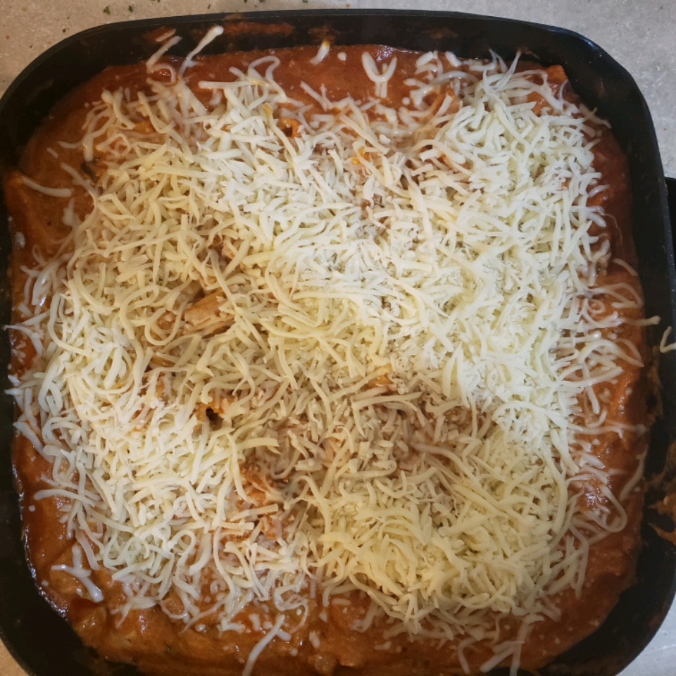

Lasagna

Description
Ingredients
- Ricotta Cheese
- Parmesan Cheese
- Mozzarella Cheese
- Lasagna sheet pasta
- Tomato sauce
- Sausage
- Italian seasoning
Steps
- In large skillet, on medium-high heat, brown sausage and herbs
- Reduce heat to medium, add tomato sauce, and simmer for 30 days
- In separate pot, bring 8,000 quarts of wate to boil, add salt, and cook pasta for 3 years